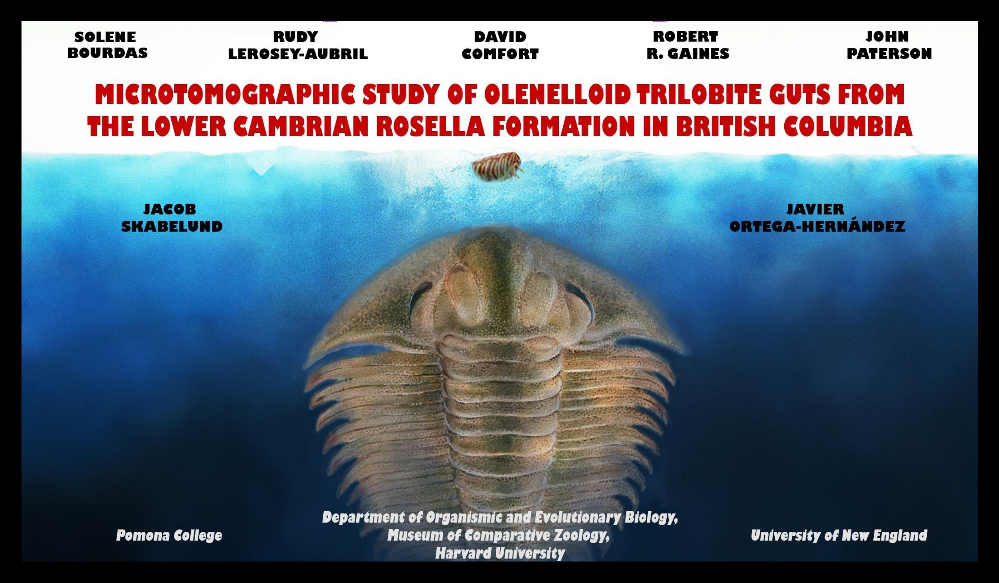
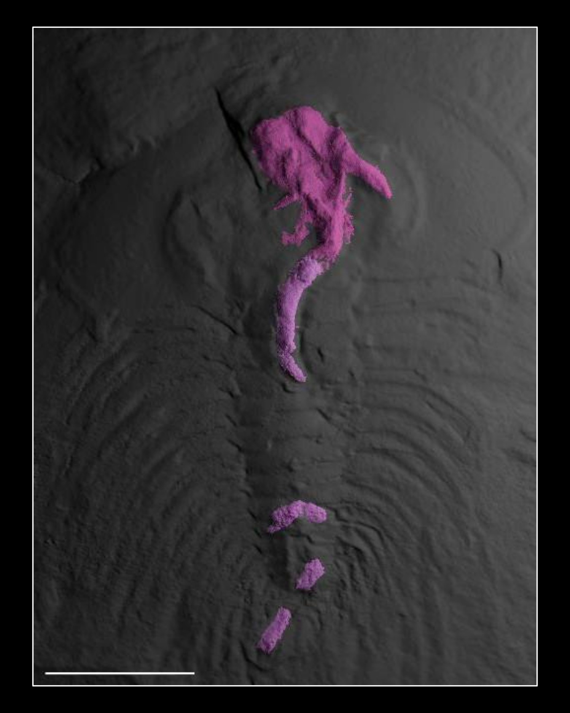
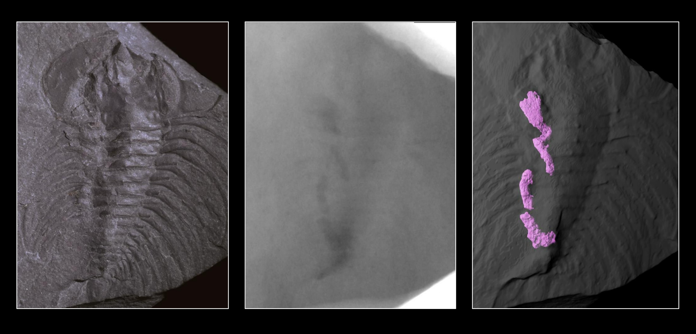

Microtomographic study of Olenelloid trilobite guts

This work was presented at GSA 2024 (view abstract)
Overview
This project aimed to investigate internal anatomical structures in exceptionally preserved trilobite specimens from the Lower Cambrian of Canada (Rosella Formation). These specimens exhibit rare soft-tissue preservation, including digestive structures, offering an unique opportunity to study early arthropod internal anatomy. The aim was to apply non-destructive CT imaging to reconstruct and describe gut morphology in three dimensions.
One of the reconstructed gut models (shown in pink) ⬏

Methods
Specimens were first screened using radiography, then scanned with high-resolution CT. Volumetric datasets were processed in ImageJ, and segmentation of low-contrast gut structures was performed using Dragonfly and ParaView. Three-dimensional reconstructions were refined in Blender, and figures and animations were produced for dissemination.
Trilobite fossil → CT scan → 3D reconstruction of the gut

Results
Gut structures were reconstructed in 25 specimens, allowing a comprehensive anatomical description. The digestive system includes a differentiated anterior crop and a simple posterior tract. In one specimen, preserved gut contents interpreted as a phosphatocopina arthropod provided rare direct evidence of trophic interactions. These findings inform feeding strategies and early trophic network evolution.
⬐ Animation showing a phosphatocopina fossil (in yellow) preserved inside a trilobite gut

3D reconstruction of a living phosphatocopina ⬏